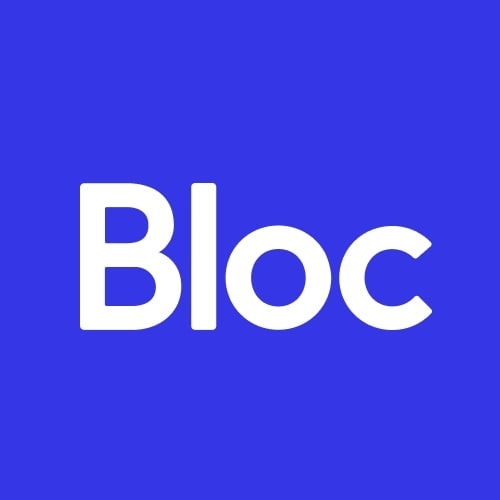

My story
There are two things that I’ve always had a passion for: creating things and solving problems. Those passions have taken various forms throughout the years, from drawing on the walls of my parents’ house to participating in high school Math Olympics to to designing flyers and logos for various clubs in college.
Most recently, I’ve been working on personal projects and sharpening my design toolkit through  's UX/UI design apprenticeship program.
In my current role as a strategy consultant at , I’ve helped clients in various industries ranging from consumer products to tech to education solve business problems and create strategies for future growth.
I want to blend my two passions together—I’d like to solve problems through creation (and maybe identify some new problems to solve along the way).
My credentials
Problem solving
- Over 40 corporate strategy and due diligence projects as a strategy consultant
- Go-to person for splitting the bill at large group dinner
- Ability to find the best travel deals
- Master haggler at flea markets
Creating things
- Hundreds of PowerPoint slides featuring complex data sets distilled into insightful charts
- Self-proclaimed professional iPhone photographer
- Drawing and sketching as a hobby
- Short stint in graphic design in college
Journey to design
I’ve always considered myself as an efficient and effective problem-solver. I'm a firm believer that there is always a better, more purposeful way to accomplish a task and I find joy in discovering those methods, even for ordinary things. While I’ve also always had a passion for art and the visual creative, I never thought of those concepts as being intertwined with problem-solving until after speaking with a close friend in design. That conversation sparked a new dream entirely: being able to blend the problem-solving, research-based skillset I’ve built up over the past few years as a strategy consultant with a love for the visual.
In my time as a strategy consultant, I’ve worked on over 40 engagements, each time learning and understanding a new industry and a new client’s specific needs and goals from the ground up. Each project typically lasted ~3-4 weeks, so I was forced to learn quickly, push the process forward even under ambiguity, and deliver results often in parallel with client feedback. I’m comfortable with the unknown, creating my own data, and deriving actionable insights from that data.
I believe that a good designer helps the user accomplish their goals in the most efficient and effective way possible, similarly to how a good consultant helps the client accomplish their goals in the most efficient and effective way possible.
I'm a problem-solver and a designer. I believe in iterating quickly, delivering often, and always having empathy for the user. I believe that there can always be a better way to do things and I'm on a mission to find out how.
Want to get in touch?
I love working on new projects. Tell me about yours!